01 · INTRODUCTION
Overview
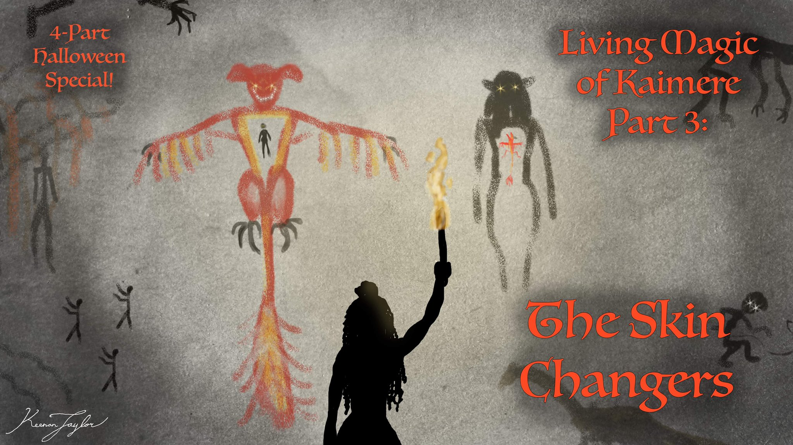
The ability to assume the form of another animal is among the oldest and most widespread motifs in human folklore. Across cultures, stories describe people who abandon their human bodies to become beasts, whether through inherited supernatural abilities, deliberate transformations, curses, or the use of enchanted objects. Werewolves, selkies, nagas, and aswang are among the many examples of this enduring archetype. Such stories reflect a fascination with the boundary between humanity and the animal world, particularly the possibility of experiencing an animal's physical capabilities and instincts without relinquishing one's human identity.
On Kaimere, these traditions have a tangible biological basis. Skin-changers are individuals capable of transforming their bodies into those of other animals through their connection with the planet's indigenous microorganisms, collectively known to Kaimerans as magic. Although their abilities are frequently described as supernatural, skin-changers are not fundamentally different species from ordinary humans. They remain genetically human, and their transformations represent extraordinary alterations of their existing morphology rather than the replacement of one organism with another.
Skin-changing is one of the most recognizable manifestations of living magic on Kaimere. It occurs in numerous cultures and takes several distinct forms, although hereditary skin-changers constitute the overwhelming majority of known cases. Most are capable of assuming the form of a single mammalian predator, commonly a wolf, hyena, or large cat. Other lineages are considerably more unusual, encompassing pinnipeds, sharks, dolphins, non-therian mammals, and even aquatic firebirds and elasmosaurs.
Despite their cultural prominence, skin-changers are exceptionally rare. Their hereditary traits occur in only a small fraction of the human population, and most individuals who carry the relevant genetic characteristics never awaken their ability. In many regions of Kaimere, skin-changers have become so uncommon that their existence is regarded as folklore. Their historical distribution was considerably broader, particularly during the Age of Witches, when skin-changing lineages were more numerous and their abilities were more openly associated with magical practice.
The origins of skin-changing remain uncertain. Several hypotheses have been proposed to explain how indigenous magic first acquired the capacity to transform human hosts into animals. These include the development of a defensive hereditary strain, the transfer of magical organisms between animal hosts and humans, deliberate intervention by the First Children, and the gradual specialization of magical lineages cultivated by witches. The diversity of skin-changing mechanisms suggests that no single explanation necessarily accounts for every known example.
Nevertheless, skin-changers provide compelling evidence of the extent to which indigenous magic can alter the biology of its hosts. Their transformations demonstrate that the relationship between humans and the microbial life of Kaimere can produce changes far beyond those ordinarily possible through genetic inheritance or physiological adaptation. They also represent one of the most unusual biological legacies associated with the First Children and the historical interaction between Kaimere and Earth.
02 · Mechanics of the Transformation process
Biological Basis and Taxonomic Considerations
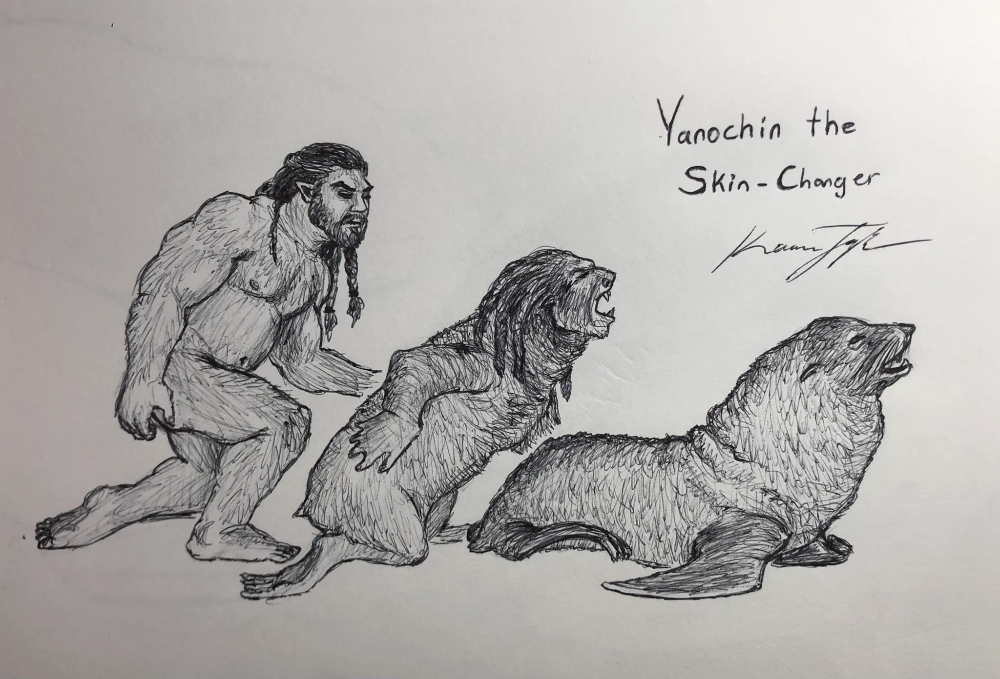
Skin-changers are not a separate species or a conventional biological lineage. They are humans whose bodies possess a connection to indigenous magic that permits substantial morphological transformation. Their underlying genetic identity remains human, even when their external anatomy assumes the form of another animal. Consequently, a skin-changer in animal form is not considered an individual of the species being imitated, but a transformed human host.
The term skin-changer is therefore descriptive rather than taxonomic. It encompasses individuals who share the ability to transform their morphology, regardless of the precise biological or magical mechanism responsible. This distinction is important because the different forms of skin-changing may not represent a single evolutionary development. Hereditary skin-changers, individuals infected by skin-changing magic, and those who transform through enchanted objects may possess fundamentally different relationships with the indigenous organisms responsible for their abilities.
Most skin-changers are capable of assuming only one animal form. This limitation appears to be characteristic of the majority of known hereditary lineages and is consistent with the idea that the transformation is determined by a particular inherited strain of magic. The selected animal form is generally stable throughout an individual's life and appears to be associated with the lineage through which the ability was inherited.
There are, however, numerous historical accounts of individuals capable of assuming several animal forms. Such beings appear in folklore and are depicted in cave paintings, sometimes alongside other manifestations of witchcraft. These representations have encouraged speculation that multiple-form skin-changing may once have been more widespread or that particularly powerful practitioners could manipulate their transformations beyond the limitations of ordinary hereditary lineages. Nevertheless, no naturalist from Earth or Kaimere has conclusively documented an individual capable of transforming into multiple unrelated animal species. The existence of such individuals remains unverified.
The animal forms assumed by skin-changers are generally comparable in size to the human host. In most cases, transformation does not result in a substantial alteration of total body mass. This suggests that the process primarily involves the reorganization of existing biological material rather than the creation or destruction of large quantities of tissue.
Some transformations, particularly those involving enchanted objects, appear to permit an increase in mass. In these cases, the indigenous magic may acquire additional elements from the surrounding atmosphere during the transformation, incorporating them into the altered body. The precise substances involved and the mechanisms through which they are collected remain uncertain. Such transformations appear to be exceptional rather than representative of the ordinary hereditary condition.
The most striking anatomical feature of skin-changing is the extent of morphological reorganization. A human body must undergo extensive changes to assume the form of a quadrupedal mammal, an aquatic animal, or a dinosaur. These transformations necessarily involve alterations to the skeleton, musculature, skin, and internal organs. The underlying mechanisms have not been established, but many scholars believe that indigenous magic interacts with the host's developmental regulatory systems.
In particular, the manipulation of homeobox genes has been proposed as a possible explanation for the transformation process. Homeobox genes play important roles in establishing the organization and development of animal bodies, making them a plausible target for a mechanism capable of reorganizing morphology. If indigenous magic can alter the expression of these developmental regulators, it may be able to induce large-scale changes in body structure without fundamentally altering the host's genetic identity.
This remains a hypothesis rather than a demonstrated mechanism. The speed and completeness of skin-changing would require an extraordinary degree of control over developmental processes, and the precise relationship between hereditary magic and the host genome is unknown. Nevertheless, the hypothesis provides a possible biological framework for understanding how an organism can retain its human genetic identity while expressing the morphology of an entirely different animal.
03 · History of Skin-Changers on Kaimere
Origins and Evolutionary Hypotheses
The first appearance of skin-changers remains unknown. There is no fossil record of the phenomenon, which is unsurprising given that skin-changing is a physiological condition rather than a distinct evolutionary lineage. The earliest evidence must therefore be reconstructed from genetic analysis, historical traditions, and archaeological depictions.
Several competing hypotheses have been proposed to explain how the first skin-changers originated. The most widely supported theory attributes the phenomenon to a hereditary strain of indigenous magic that developed as a defensive mechanism against predators.
Under this interpretation, the original skin-changing strain evolved to protect its human host when confronted by an animal attacker. Rather than simply strengthening the host or producing a conventional defensive response, the magic would alter the host's morphology to resemble that of the attacking animal. This could potentially discourage further aggression by confusing the attacker, allowing the host to assume a form that is physically intimidating, or otherwise providing an advantage during an encounter.
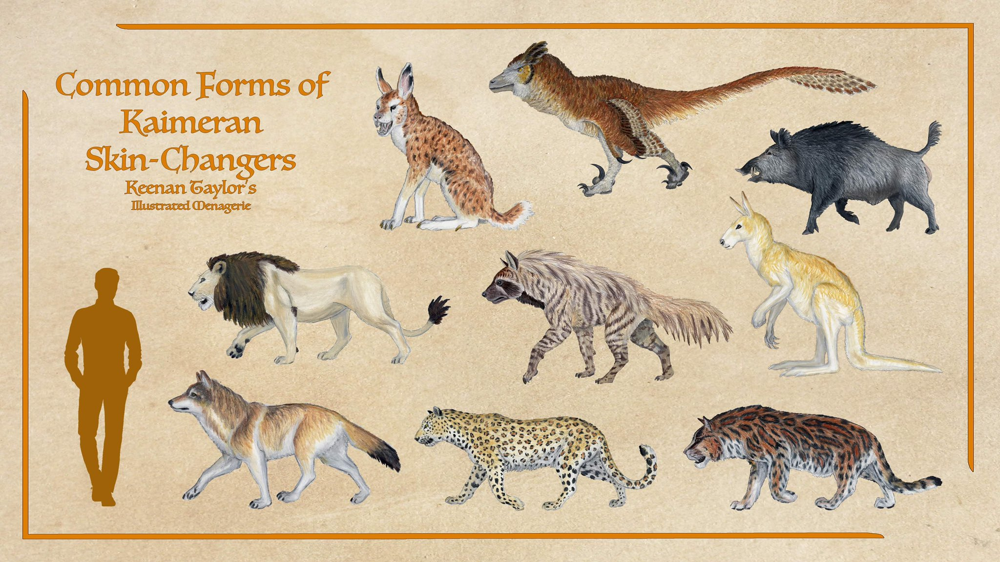
The prevalence of predatory animal forms lends support to this hypothesis. Most skin-changers are capable of transforming into animals that would ordinarily represent a serious threat to humans, including wolves, hyenas, and large cats. These are precisely the types of predators that would have exerted considerable selective pressure upon early human populations. A magical mechanism that allowed a human to assume the form of such an animal could therefore have provided a significant defensive advantage.
The theory also offers a possible explanation for why the ability is generally restricted to a single animal form. If the hereditary magic developed in response to a particular predator encountered by an ancestral host, its transformation would be associated with that species. Subsequent generations would inherit the same capacity, even if the original ecological circumstances had changed.
A second hypothesis proposes that skin-changing is caused by a strain of viral magic. Under this interpretation, the ability does not necessarily originate within a human lineage. Instead, the magic may previously have inhabited an animal host and retained the ability to assume that organism's morphology when transferred into a human body. Once established within the new host, the magic would alter the human's anatomy to reproduce the form of its previous animal host.
This mechanism has a basis in other observed manifestations of indigenous magic. Viral magic is known to move between hosts, and the possibility that it can preserve or reproduce aspects of a previous host's biological structure is consistent with the broader capabilities attributed to these organisms. Some skin-changers are known to acquire their abilities through infection, providing further support for the possibility that at least some lineages originated through this process.
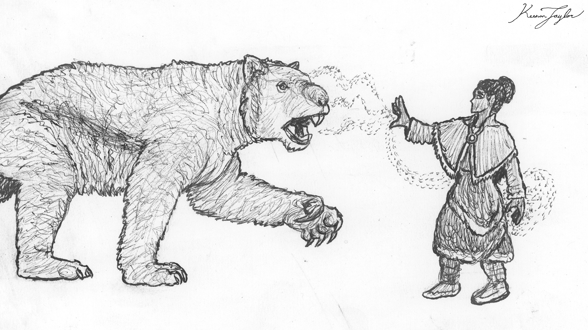
A third hypothesis attributes skin-changing to the First Children. These beings are believed to have possessed an exceptional understanding of indigenous magic and may have manipulated its constituent organisms for purposes that are no longer understood. Skin-changing could therefore represent an intentional alteration of human biology, either developed as a defensive adaptation or created for a more specialized purpose.
The First Children hypothesis is particularly relevant to the distribution of skin-changing magic beyond Kaimere. Geneticists associated with the Assembly, a human organization investigating supernatural incursions from Kaimere, believe that skin-changing strains were introduced to Earth during the same general period in which the First Children mastered the reversal of the Portal, approximately 13,000 years ago. The widespread distribution of these strains among human populations, together with the appearance of witchcraft traditions, has been interpreted as evidence that the First Children may have been responsible for transmitting both magical conditions.
The means and purpose of this transmission remain unknown. It is unclear whether the First Children deliberately introduced the strains into human populations, whether the magic spread through some form of uncontrolled interaction, or whether the phenomenon resulted from an entirely different process associated with the opening of the Portal between worlds.
A final hypothesis proposes that skin-changing was developed or cultivated by witches. Witches are individuals associated with powerful hives of indigenous magic and are capable of manipulating their environments through a variety of unusual biological processes. Skin-changing may therefore have originated as a specialized magical practice that eventually became hereditary or otherwise incorporated into human populations.
The existence of several distinct mechanisms of transformation lends some credibility to the possibility that multiple origins are represented among modern skin-changers. Hereditary lineages, infectious strains, and transformations dependent upon enchanted objects may not share a single evolutionary history. Rather than one explanation accounting for every known case, the phenomenon may represent several forms of magical manipulation that have produced similar results.
04 · Genetic Shapeshifters
Hereditary Skin-Changers
Hereditary skin-changing is by far the most common form of the phenomenon. Individuals belonging to these lineages inherit the ability through their ancestry, although the presence of the relevant genetic and magical factors does not necessarily mean that the ability will manifest in every descendant.
The hereditary nature of these strains is consistent with the broader relationship between indigenous magic and host organisms. Some forms of magic are associated with particular host species and are transmitted from one generation to the next. Such hereditary magic can influence the physiology and development of its host without replacing its underlying biological identity. Skin-changing appears to represent an especially dramatic expression of this relationship.
In most hereditary lineages, the individual is capable of transforming into a single animal species. The form is generally associated with the lineage's historical ancestry and may reflect the species encountered by an ancestral human population during the initial development or acquisition of the strain.
This relationship is particularly apparent in the unusual distribution of skin-changer lineages among human populations on Earth. Some lineages transform into animals that are no longer common in their present surroundings or that are not normally associated with the region in which the lineage is found. Examples include lion skin-changers in Germany and dire wolf skin-changers in California. Such distributions are difficult to explain through a purely local evolutionary process.
The leading interpretation is that these forms reflect the animals encountered by the ancestral hosts around the time of their initial contact with Kaimere or with the First Children. The magical strain may have retained its original animal association even after the descendants of its first human host migrated into regions where the corresponding animal was absent.
This theory is supported by the relative consistency of hereditary animal forms across generations. A lineage's transformation does not necessarily change to reflect the animals with which its descendants currently interact. Instead, the form appears to be inherited as part of the lineage's magical identity.
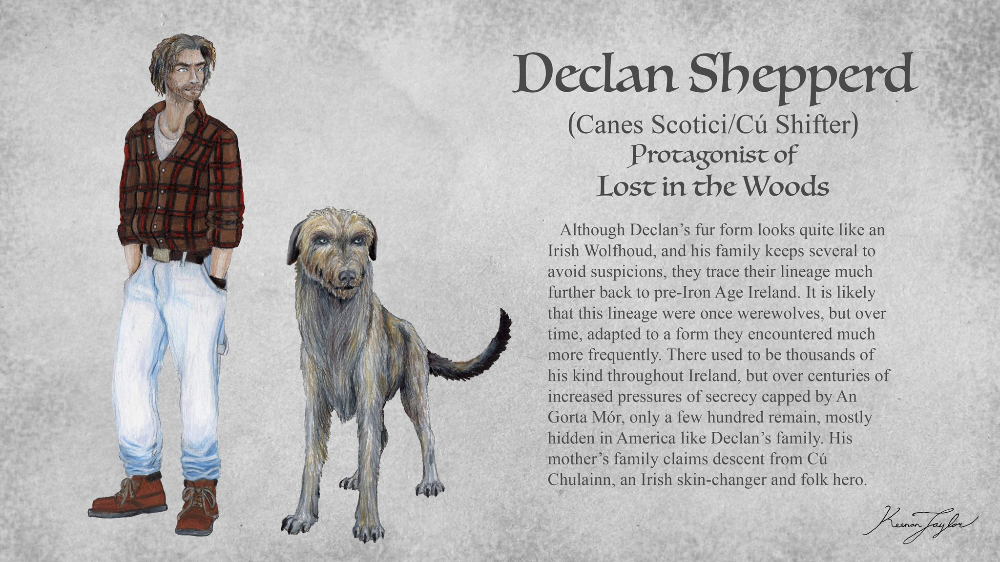
There are, however, younger lineages that complicate this interpretation. Sight-hound skin-changers appear to represent more recent developments. Their existence suggests that hereditary strains may not be entirely fixed in their animal associations and could potentially adapt to local ecological conditions over time.
One possibility is that newer lineages arise through the modification of existing strains, allowing skin-changers to assume forms better suited to the environments in which their descendants live. Such a process could explain why some lineages appear to correspond more closely to local fauna than others. It remains uncertain whether these developments represent genuine evolutionary changes in the magic, the acquisition of new strains, or an entirely separate mechanism.
Hereditary skin-changing is also not universal among individuals who carry the relevant genetic factors. Less than one percent of humans are believed to possess skin-changing genes, and most carriers never awaken the ability. The conditions responsible for its manifestation are unknown. The presence of the strain may therefore be necessary but insufficient for transformation, with additional biological or magical factors determining whether the ability becomes active.
05 · Infected Shapeshifters
Viral and Acquired Skin-Changing
Although hereditary skin-changing is the most common form, some individuals acquire the ability through infection. These cases resemble the traditional werewolf narratives in which an individual becomes a shapeshifter after being bitten by another transformed person.
In such instances, the transformation is attributed to a transmissible strain of skin-changing magic. The infected individual becomes a host for the magic and subsequently develops the ability to assume the animal form associated with that strain.
This process differs from hereditary transmission because the ability is acquired through direct exposure rather than inherited from an ancestor. It also suggests that skin-changing magic is capable of moving between human hosts while retaining the characteristics necessary to reproduce a particular animal morphology.
The relationship between viral and hereditary skin-changing remains uncertain. It is possible that some hereditary lineages originated through ancient infections that subsequently became established within human populations. Alternatively, viral strains may represent a separate form of magic that has retained the ability to transform its hosts without becoming permanently integrated into a hereditary lineage.
The distinction may be particularly important when considering the evolutionary origins of skin-changing. If an animal-associated strain of magic can move between hosts, it could potentially explain how the ability first entered human populations. An organism that previously inhabited a predator might have transferred into a human host and induced the same morphology in its new environment. Over time, some of these associations may have become hereditary, while others remained transmissible through infection.
This would provide a possible connection between the hereditary and viral hypotheses. However, no definitive evidence establishes that all hereditary skin-changers originated in this way.
06 · Evolutionary Impact
Enchanted Objects and External Catalysts
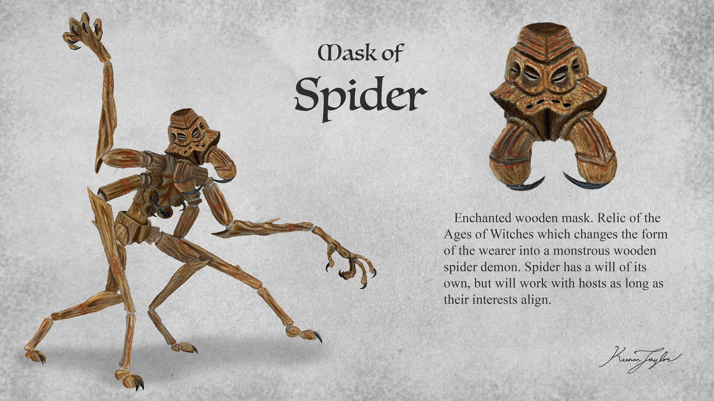
The third recognized form of skin-changing involves enchanted objects. Unlike hereditary and viral skin-changers, individuals associated with these transformations do not necessarily possess an inherited ability or acquire it through infection. Instead, the transformation is triggered by the use of an object containing or associated with indigenous magic.
These objects are often described as enchanted hides, masks, or other materials that provide a connection between the wearer and the animal form being assumed. The transformation may be dependent upon continued possession or use of the object, making this form of skin-changing distinct from the more permanent abilities of hereditary lineages.
One of the most unusual examples is the Mask of the Spider, which can transforms its wearer into a monstrous creature. The transformation demonstrates that enchanted objects can act as catalysts for extensive morphological alteration, although the precise biological relationship between the wearer, the object, and the magic remains unknown.
The existence of these objects complicates the classification of skin-changers. They suggest that the ability to transform does not necessarily require a permanent hereditary relationship between the magic and its human host. Instead, an external object may provide the necessary connection or serve as a medium through which the transformation is initiated.
Some enchanted transformations also appear capable of increasing the mass of the resulting organism. In these cases, the magic may draw additional material from the surrounding atmosphere during the transformation, allowing the resulting body to exceed the mass of the original human host. This differs from the usual condition of skin-changing, in which total mass remains approximately constant.
The relationship between enchanted objects and the First Children remains uncertain. Such objects may be products of their magical practices, artifacts created by witches, or naturally occurring materials that have become inhabited by indigenous magic. Their rarity and unusual effects make it difficult to establish whether they represent an independent form of skin-changing or an external means of activating an otherwise familiar process.
07 · The Transformation Process
Morphological Transformation and Developmental Biology
The transformation of a human into an animal presents several substantial biological problems. A human body differs considerably from that of most quadrupedal mammals, and the differences become even more pronounced when considering aquatic animals or dinosaurs. Skin-changing therefore requires more than a superficial alteration of the skin or external appearance. It involves the reorganization of the body's fundamental anatomical structures.
The most widely discussed biological explanation involves the manipulation of homeobox genes. These genes are central to the regulation of embryonic development and help establish the spatial organization of animal bodies. Their expression contributes to the formation and arrangement of anatomical structures, including the relative positions of major body regions and the development of limbs.
If indigenous magic can influence these regulatory systems, it may be capable of inducing changes that reorganize the host's body plan. A human could theoretically express a different arrangement of skeletal and muscular structures without losing its underlying genetic identity. The magic would not need to replace the host's genome with that of another species. Instead, it could alter the developmental instructions through which the existing genome is expressed.
Such a mechanism would be consistent with the observation that skin-changers remain genetically human. Their transformation is morphological rather than taxonomic. They do not become members of the species whose appearance they assume, even when their external form is nearly indistinguishable from that of the animal.
However, the manipulation of homeobox genes alone may not explain every aspect of the process. A complete transformation would also require changes to tissues and organs that are not governed solely by body-plan development. The conversion of a human into a wolf, for example, would involve substantial modifications to the skull, dentition, vertebral column, limbs, musculature, digestive system, and sensory organs. The transformation would also need to account for the rearrangement of internal structures while preserving the viability of the organism.
The role of indigenous magic may therefore extend beyond the regulation of developmental genes. It may influence the host's cells directly, reorganizing tissues and altering their functions as the transformation progresses. Whether these changes occur through the activation of dormant developmental pathways, the production of new cells, or the direct manipulation of existing tissues is unknown.
The apparent conservation of mass presents another important consideration. Most skin-changers do not become substantially larger or smaller during transformation. This suggests that their bodies redistribute existing material to produce the new morphology. A human assuming the form of a large wolf may consequently retain approximately the same total mass despite changes in body proportions and skeletal arrangement.
The exceptions associated with enchanted objects indicate that this restriction is not absolute. Some forms of magic appear capable of acquiring additional matter during transformation, although the precise mechanism has not been established.
08 · The Spread of Shapeshifters
Diversity and Distribution of Skin-Changer Lineages
Skin-changers occur among several human populations, although their frequency and cultural status vary considerably. Their forms are strongly influenced by lineage, historical contact with animals, and the particular magical traditions associated with their communities.
The majority of known skin-changers assume mammalian predator forms. Wolves and large dogs are especially common, followed by hyenas and large cats. This predominance is consistent with the hypothesis that skin-changing originated as a defensive response to predation. It may also reflect the particular strains of magic that became established in human populations during the earliest periods of contact between Earth and Kaimere.
Approximately eighty percent of known skin-changer lineages on Earth are associated with wolves and large dogs. These forms appear to have been especially successful in integrating into human cultures. Their relative compatibility with human settlements and social environments may have contributed to their survival, although the precise reasons for their predominance are uncertain.
Other lineages have become rare or disappeared entirely. Many animal forms once represented in human folklore are no longer associated with living skin-changer populations, suggesting that numerous strains have been lost over the thousands of years since their initial introduction. The survival of particular lineages may depend upon the stability of hereditary transmission, the size of the human population carrying the strain, and the social circumstances in which skin-changers live.
On Kaimere, hereditary skin-changers are also rare, although their distribution is more varied than that of their Earth counterparts. Several regional populations possess traditions involving animal transformation, and some communities appear to retain lineages that have disappeared elsewhere.
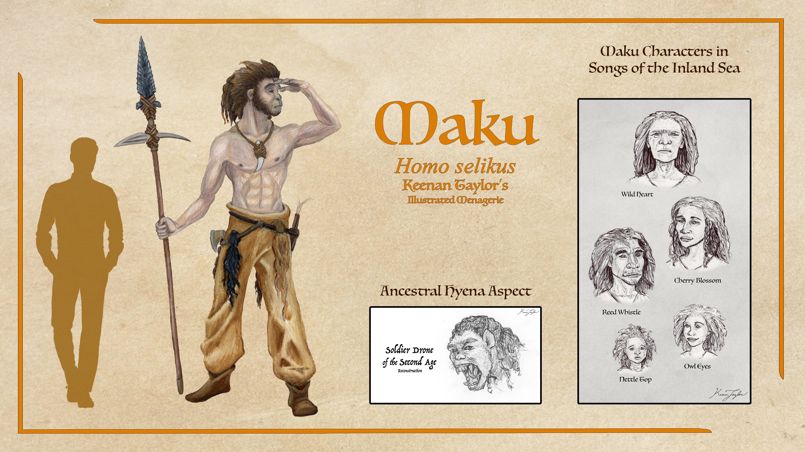
The Maku are particularly notable for the diversity of their skin-changers. Their known lineages include forms based on animals from the Known World as well as non-therian mammals and dinosaurs encountered on the eastern continent. This diversity suggests that skin-changing among the Maku is not restricted to the mammalian predator forms that dominate many other human populations.
The existence of these lineages also demonstrates that the ability is not necessarily tied to a particular anatomical group. Although most skin-changers transform into mammals, the underlying mechanism appears capable of reproducing a much broader range of animal morphologies.
09 ·The Reduction in Shapeshifters
The Decline of Skin-Changers
Skin-changers were once considerably more common than they are today. Their historical prominence is especially associated with the Age of Witches, when individuals and communities possessing unusual forms of hereditary magic appear to have been more visible within Kaimeran societies.
During this period, skin-changers were sufficiently familiar that they became prominent figures in regional traditions, military legends, and religious practices. Their abilities were sometimes celebrated, sometimes feared, and frequently associated with witchcraft. The widespread appearance of shapeshifting figures in the surviving folklore of different cultures suggests that the phenomenon was once more culturally visible than it is in the present day.
The reasons for their decline are uncertain. One hypothesis proposes that the events responsible for ending the Age of Witches also disrupted the magical conditions that sustained skin-changing lineages. If the hereditary strains were dependent upon particular hives or environmental circumstances, changes in the distribution or behavior of indigenous magic could have caused their gradual disappearance.
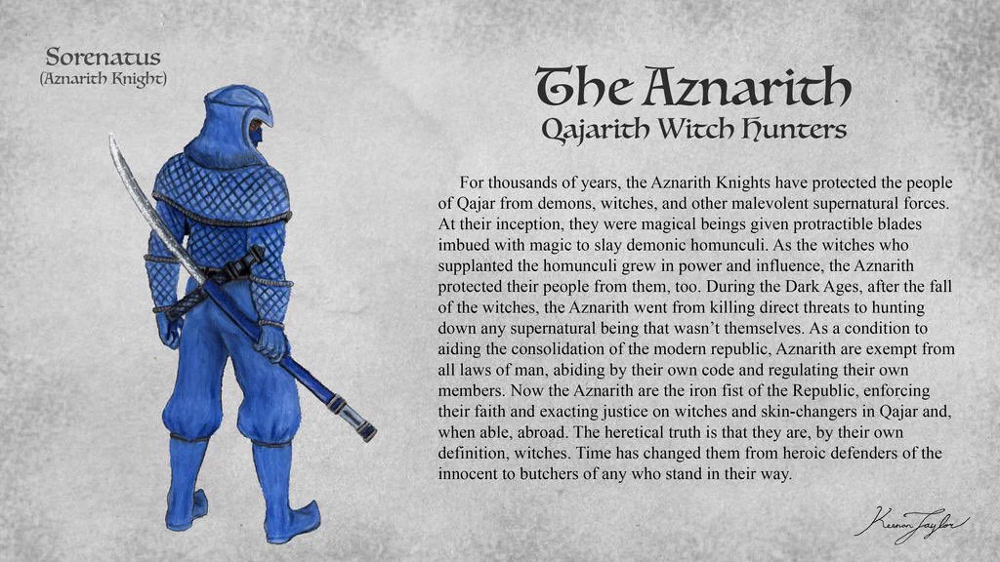
Another explanation attributes the decline to deliberate persecution. Witch hunters may have targeted skin-changers alongside witches and other individuals associated with hereditary magic. Because skin-changers were often feared for their ability to assume predatory forms, they may have been especially vulnerable to suspicion and violence. The destruction of family lineages, combined with the secrecy imposed upon surviving individuals, could have driven the phenomenon toward its present rarity.
Neither hypothesis can be established conclusively. The surviving historical records are incomplete, and the Dark Ages following the Age of Witches provide little information about the fate of many magical lineages.
In the present day, skin-changers are sufficiently uncommon that they are considered mythical by many inhabitants of the Empire, the Free-States, and the Qajarith Republic. The few surviving individuals in these regions generally conceal their abilities and avoid drawing attention to their connection with indigenous magic. This secrecy makes it difficult to establish their actual numbers and may contribute to the persistence of folklore that exaggerates or misrepresents their abilities.
The decline has not been uniform across Kaimere. Certain communities retain traditions and apparent populations of skin-changers, suggesting that some lineages have survived through periods in which others disappeared.
10 · The Mystics and Tricksters
The Pakardiant Skin-Changers
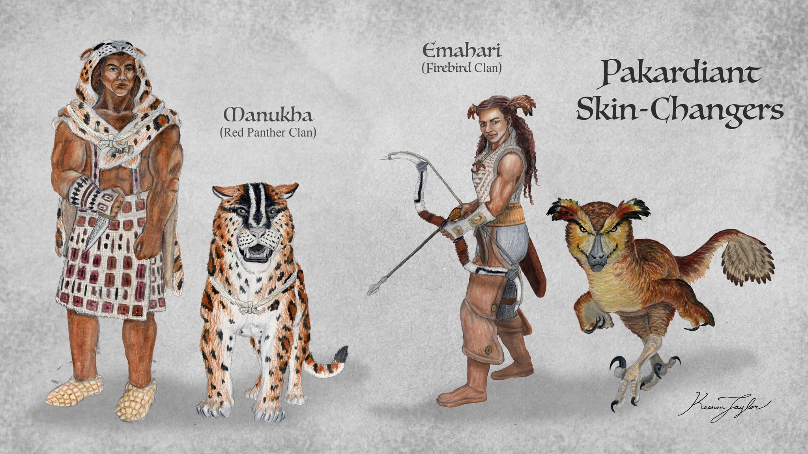
Pakardia preserves some of the most persistent traditions concerning hereditary skin-changers. Although most lineages once associated with the region have faded into legend, rumors continue to associate several clans and religious communities with individuals capable of assuming the forms of local animals.
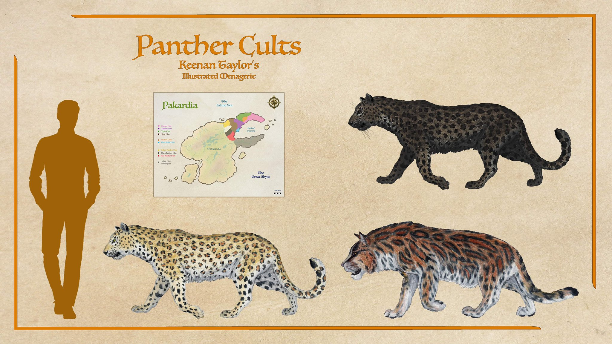
The most prominent of these traditions concern the Panther Clans and the three Panther Cults, conventionally distinguished as the Red, Yellow, and Black Panther Cults. These groups are associated with the belief that skin-changers remain among their members in substantial numbers, with some accounts claiming that dozens or even hundreds survive within their communities. The Panther Clans occupy a particularly important position in the cultural imagination of the Confederacy. Their western territories and secretive religious practices have contributed to a longstanding atmosphere of mistrust, while their association with skin-changing has made them the subject of considerable speculation.
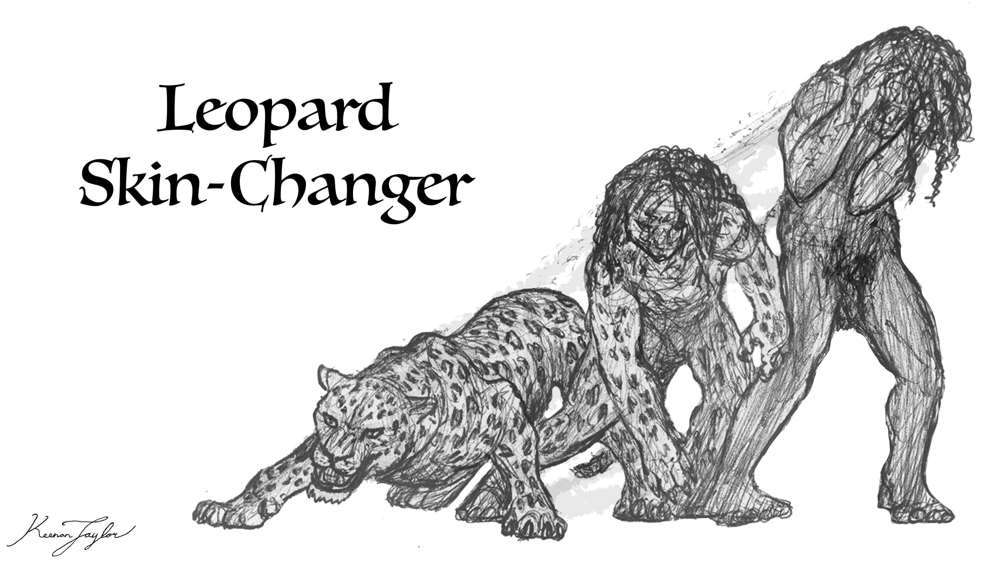
The Cult of the Panther is particularly notorious for rumors of anthropophagy. According to these accounts, initiation into its skin-changing traditions involves consuming the flesh and drinking the blood of both panther and human beings. These rites are supposedly intended to acclimate the initiate's body to the transformation between human and panther forms. The claims are difficult to verify. The religious practices of the Panther Cults are secretive, and the clans emphatically deny the accusations. There is little reliable evidence establishing that anthropophagy forms any part of their initiation practices. Nevertheless, the rumors persist and have contributed to the deep mistrust that the Confederacy holds toward the Panther Clans.
It is important to distinguish these cultural accusations from the biological evidence for skin-changing. The existence of panther skin-changers among the Pakardiant peoples is supported by persistent regional traditions, but the alleged initiation rites remain unsubstantiated. Even if the Panther Cults preserve hereditary skin-changing lineages, there is no established reason to assume that their abilities require the consumption of animal or human flesh.
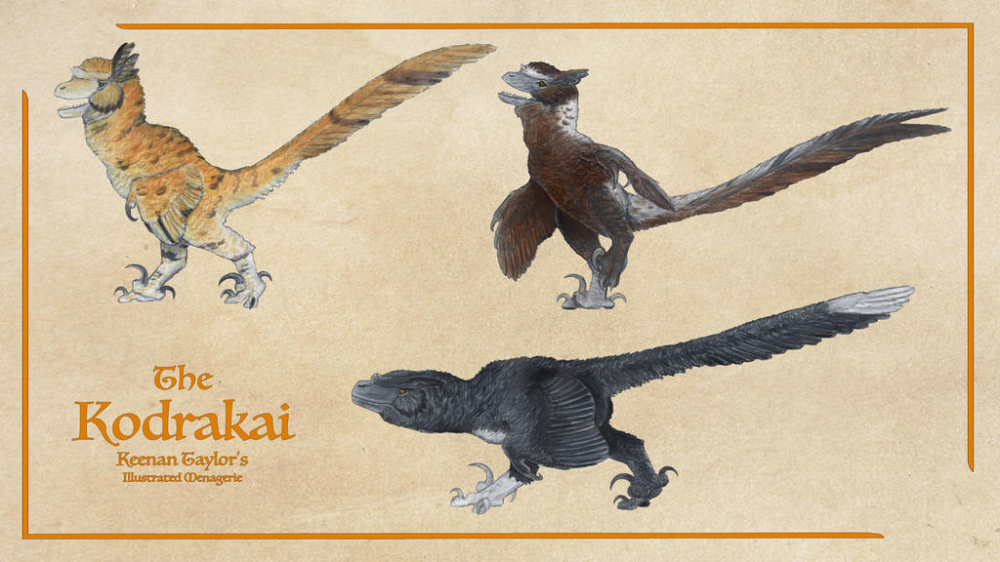
While some are feared or misunderstood, other skin-changer types are revered and respects. Perhaps the trikster Indrakai's most famous trick was creating the first skin-changers, at least according to the Pakardiant. In the story, the peoples of the highlands were being plagued by a formidable demon: the puppet-master Olikideu. In some legends he has the head of a crocodile, in others an elasmosaur or serpent, but a consistent theme is his mastery over many vampiric thralls. He and his minions were terrorizing the highlands. Only material weapons could cut his body and only magic could harm his spirit: without both striking in unison, he would immediately heal. Many great spirits tried to kill him by possessing their bodies, yet each attempt he thwarted, for none of the spirits were so committed that they would risk death of their species by being slain in a body. Finally, Indrakai placed a shard of himself in a young witch or hunter named Alohari, and as his spirit now possessed her body alongside the soul he had given humankind before, she could change her body into either human or firebird. With this power, having magic in a mortal form just like a demon, she and Indrakai were able to defeat their opponent. In some versions she killed him, in others Olikideu was chased off the island, but regardless: this first skin-changer called a kodrakai saved the highland kingdoms and became the nemesis of Olikideu and his corpse puppets.
During the Dark Ages, kodrakai descendants of Alohari were revered warriors in the Firebird clan, vanquishing many demons and their thralls. Depictions of them often show indrakai with unconventional coat patterns, with color usually matching their hair. This is unsurprising, as skin-changers often show fur and feather patterns more consistent with domesticated animals than their wild counterparts. Though no kodrakai have been seen in a thousand years, it is said they will return if Pakardiant is ever threatened by demons, and the Trickster will aid his people once more.
Other Pakardiant traditions associate skin-changers with the reclusive clans of the Spine Peninsula. These communities are said to preserve several lineages capable of assuming the forms of different Pakardiant animals. The degree to which these claims reflect surviving populations or merely the continuation of older traditions is unknown.
Among the Pakardiant peoples, skin-changers are sometimes associated with prophecies concerning the future of the Confederacy. Some traditions maintain that they will one day return in great numbers to defend Pakardia during a major conflict predicted by the sages. In this interpretation, the decline of skin-changing is not permanent but a period of concealment preceding a future resurgence.
Such beliefs have helped preserve the cultural significance of skin-changers even where their actual presence is uncertain. They remain symbols of ancestral power, regional identity, and the possibility that ancient magical lineages have survived beyond the reach of ordinary society.
11 · The Cannibals and Mercenaries
The Khalin Skin-Changers
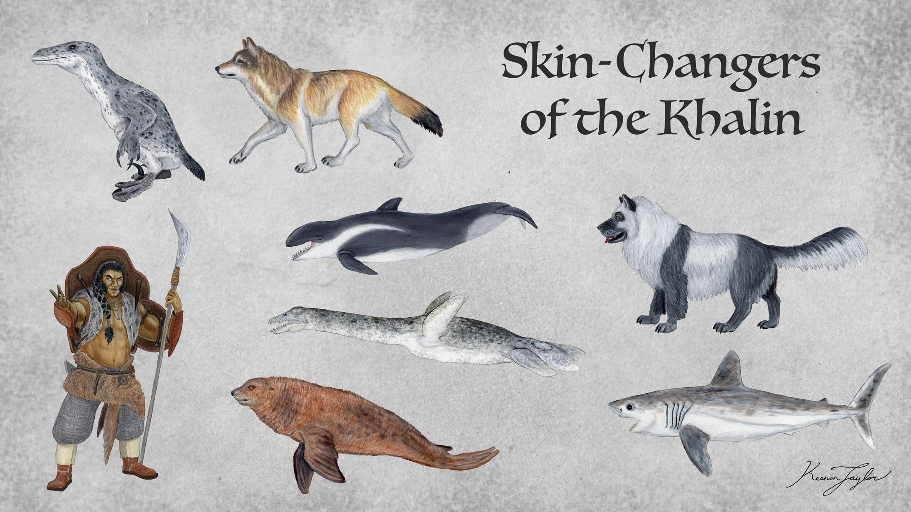
The Khalin, possess some of the most diverse skin-changing lineages recorded on Kaimere. Unlike the predominance of terrestrial mammalian predators found in many other populations, Kaleen skin-changers encompass a broad range of marine and aquatic forms. Known lineages include hounds, pinnipeds, sharks, dolphins, aquatic firebirds, and a family capable of assuming the form of small elasmosaurs. This diversity is particularly significant because it demonstrates the capacity of skin-changing magic to reproduce morphologies adapted to radically different environments.
Aquatic transformations require extensive modifications to the human body. A skin-changer assuming the form of a shark, dolphin, or pinniped must develop a body capable of efficient movement through water, while an aquatic dromaeosaur or small elasmosaur would require a different arrangement of locomotor structures and body proportions. The existence of these lineages therefore provides valuable evidence for the breadth of morphological transformations that indigenous magic can produce.
The Khalin's maritime traditions may have contributed to the preservation and cultural visibility of these lineages. Their close association with the sea provides a social and ecological context in which aquatic animal forms are particularly meaningful. However, it remains uncertain whether the diversity of Khalin skin-changers developed through the same hereditary processes as the terrestrial lineages found elsewhere.
One lineage of fur-seal skin-changers amongst the Eskadin has become particularly well known through its involvement in mercenary service. Members of this lineage have served as scouts for an imperial general operating across the Abyss. Their aquatic capabilities make them valuable in environments where conventional scouts would be restricted by the surrounding sea, and their military employment demonstrates that skin-changing can provide practical advantages beyond its traditional associations with witchcraft and folklore.
The Khalin lineages also demonstrate that skin-changing is not necessarily associated with predatory behavior. Although many of the most familiar forms are predators, pinniped and other aquatic transformations may reflect a broader relationship between hereditary magic and the animals historically encountered by the ancestral hosts.
12 · The Raiders and Survivors
The Maku Skin-Changers
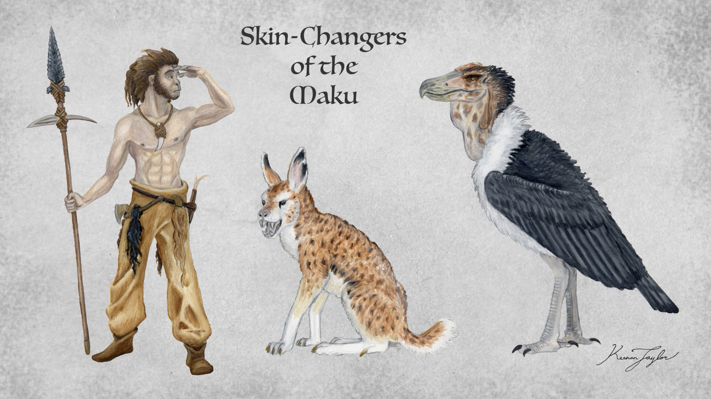
The Maku also possess several skin-changing lineages, some of which are associated with animals of the Known World while others reflect the distinctive fauna encountered on the eastern continent. Their diversity is particularly important because it includes non-therian mammals and dinosaurs. This distinguishes Maku skin-changers from the predominantly mammalian lineages found among many other human populations and suggests that the phenomenon can accommodate a much broader range of anatomical forms.
The ability to assume dinosaurian morphologies is especially significant. These transformations demonstrate that skin-changing is not restricted to animals whose body plans are relatively similar to those of humans. Instead, the magic appears capable of reorganizing the host into forms with substantially different skeletal arrangements, locomotor systems, and proportions.
The Maku lineages also provide additional evidence against the idea that skin-changing is exclusively a consequence of an ancient human adaptation to terrestrial mammalian predators. Their diversity suggests that the underlying magical mechanisms may be considerably more flexible than the most widely accepted hereditary hypothesis initially implies. It remains unclear whether these lineages originated independently or were acquired through interactions with other populations and forms of indigenous magic. Their existence nevertheless establishes that the phenomenon is not limited to the familiar wolf, hyena, and big-cat transformations that dominate much of the folklore surrounding skin-changers.
13 · The Transformation Process
Human and Kaimeran Interactions
The relationship between skin-changers and human societies has historically been shaped by fear, reverence, and secrecy. Their ability to assume the forms of dangerous animals makes them difficult to distinguish from ordinary humans when untransformed, while their transformations can provoke suspicion among communities unfamiliar with the phenomenon.
In many regions, skin-changers have become associated with predation, witchcraft, and supernatural violence. Their animal forms are frequently those of species that pose serious threats to human settlements, reinforcing the perception that they are inherently dangerous. However, the existence of a predatory transformation does not necessarily imply that the individual possesses the behavior or temperament of the animal being imitated.
Skin-changers remain genetically human, and their transformed morphology should not be confused with a complete change in identity. The extent to which animal instincts influence their behavior is not established. The common association between skin-changing and predatory aggression may therefore reflect cultural expectations as much as biological reality.
The historical persecution of skin-changers has encouraged many surviving individuals to conceal their abilities. In regions where the phenomenon is considered mythical, the revelation of a genuine skin-changer could expose the individual and their family to considerable danger. This secrecy further complicates attempts to document the surviving lineages. FOr instance, amongst the Dolani nomads, legends of kangaroo and hyena skin-changers are common. Meanwhile amongst the Qajarith, lion and boar skin-changers were revered during the Dark Ages before the consolidation of the Republic, from which they are not considered to be a heresy to even mention.
In other communities, skin-changers occupy more prominent social roles. The Khalin fur-seal lineage serving as mercenary scouts demonstrates that the ability can be integrated into organized military service. Among the Pakardiant peoples, skin-changers are sometimes associated with religious and ancestral traditions, while among the Maku their diversity reflects the broader range of animal forms available within their cultural and ecological environment.
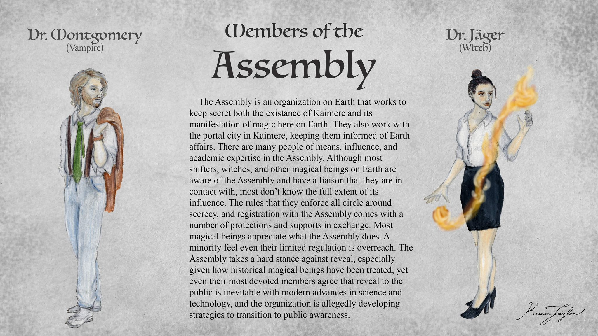
The Assembly's investigations into skin-changing have also expanded the phenomenon beyond its traditional folkloric context. By studying the hereditary strains present among human populations on Earth, Assembly geneticists have identified evidence that skin-changing is not simply a collection of independent cultural myths. The distribution of the strains and their association with the history of the Portal have encouraged the hypothesis that skin-changing was introduced to Earth through contact with Kaimere and the First Children.
This research has important implications for understanding the history of human populations. If the First Children were responsible for introducing skin-changing magic into Earth, then the phenomenon represents one of the clearest examples of indigenous Kaimerean life becoming integrated into human biology beyond the planet itself.